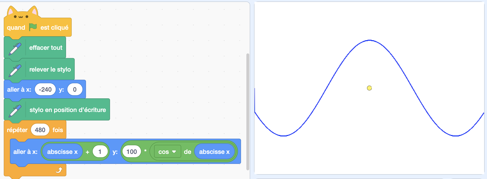

Quantifier la propagation

Figure 4: Courbe d'évolution du nombre de personnes infectées.
Peut-être pouvez-vous déjà voir les différences apportées par le confinement. Elle est flagrande si nous changeons le pourcentage de confinement de 0 à 100%. Qu'en est-il du changement lorsque l'on passe de 25 à 75% ? Ce que je vous propose est d'avoir un aperçu quantitatif de ce qui se passe dans notre simulateur. Pour cela, nous allons faire un programme qui dessine une courbe représentant le nombre de personnes infectées en fonction du temps. Mais d'abord, essayons simplement de dessiner une courbe quelconque.
Exercice 7
Créer un nouveau sprite sans rien dans son costume et ajouter l'extension "stylo" au bloc de code (pour ajouter une extension, cliquer sur la petite icône tout en bas à gauche avec un petit +). Cette extension est idéale pour dessiner une courbe. En effet, quand on met le "stylo en position d'écriture", alors lorsque l'on fait bouger le sprite, il laisse une marque de stylo derrière lui. Quand on "releve le stylo" il n'écrit plus. A l'aide de ces nouvelles instructions, dessinez votre fonction trigonométrique préférée, si vous en avez une.
Solution exercice 7
 Remarquez que pour dessiner en paix pendant un moment, j'ai enlevé le bloc "quand drapeau est cliqué" de mon sprite de départ. Ca me permet de voir ma courbe sans une foule qui grouille devant et de debugger mon code avec plus de clareté.
Exercice 8
Maintenant que vous vous êtes familiarisés avec les blocs "stylo", utilisez les pour dessiner la courbe qui représente le nombre de personnes infectées en fonction du temps. Indice: créer un variable globale NbMalade qui sera mise à jour dans le programme des humains.
Solution exercice 8
 Pour résoudre ce problème, j'ai créé une variable globale NbMalade initialisée à zéro quand mon programme démarre et mise à jour à chaque fois qu'une personne est infectée (+1) et qu'une personne est guérie (-1). A chaque nouveau jour je peux donc déplacer mon sprite stylo en fonction de cette variable. Le "-180" ici est simplement un décalage qui me permet de dessiner le 0 en bas de l'environnement.
Pour résoudre ce problème, j'ai créé une variable globale NbMalade initialisée à zéro quand mon programme démarre et mise à jour à chaque fois qu'une personne est infectée (+1) et qu'une personne est guérie (-1). A chaque nouveau jour je peux donc déplacer mon sprite stylo en fonction de cette variable. Le "-180" ici est simplement un décalage qui me permet de dessiner le 0 en bas de l'environnement.